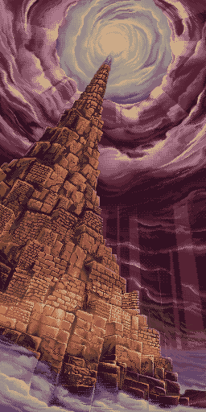

Story

The Bisque Road trade route runs from east to west, across the continent of Eizel. In the northern half of the Ka Lua Desert, which comprises the majority of the continent, an ancient tower is discovered. The tower appears to be a relic from a bygone era. It houses crests modelled after the four classical elements, revealing the knowledge of the ancient civilisations of Eizel.
The Nubial Church of the Suelang Empire in the East and the Teachings of Gidia of the Gidiar Empire in the West dispatched research groups in order to claim the wisdom contained within the tower. Despite fierce rivalry between both parties, they gradually manage to secure their foothold in the tower.
However, the interior of the tower is riddled with traps. Within ten years of its discovery, excavation stagnated at the fifth stratum. It was around that time people started to call the structure the Tower of God.
Fate led five individuals to this Tower of God.
One as a criminal, one to overcome a trial, one interested in the treasures of antiquity, one to satisfy intellectuel curiosities; the amnesiac fifth one had no idea how he had ended up in the tower.
What was it that fate held for these individuals?